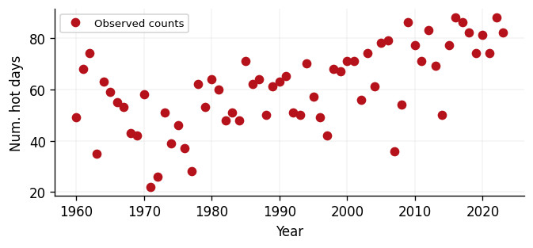
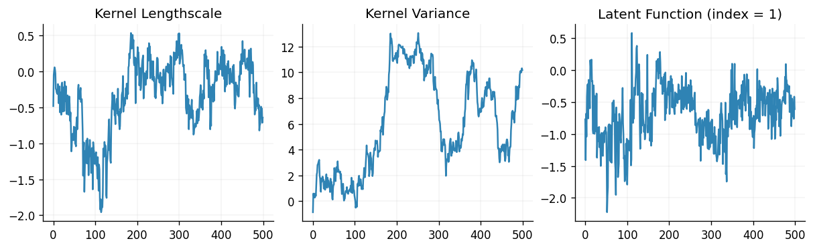
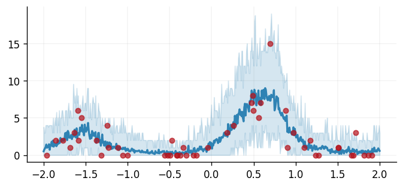

Count data regression
In this notebook we demonstrate how to perform inference for Gaussian process models with non-Gaussian likelihoods via Markov chain Monte Carlo (MCMC). We focus on a count data regression task here and use BlackJax for sampling.
from pathlib import Path
import blackjax
import equinox as eqx
from examples.utils import use_mpl_style
import jax
from jax import config
import jax.numpy as jnp
import jax.random as jr
import jax.tree_util as jtu
from jaxtyping import install_import_hook
import matplotlib as mpl
import matplotlib.pyplot as plt
import pandas as pd
import paramax
with install_import_hook("gpjax", "beartype.beartype"):
import gpjax as gpx
# Enable Float64 for more stable matrix inversions.
config.update("jax_enable_x64", True)
# set the default style for plotting
use_mpl_style()
cols = mpl.rcParams["axes.prop_cycle"].by_key()["color"]
key = jr.key(42)
Dataset
For count data regression, the Poisson distribution is a natural choice for the likelihood function. The probability mass function of the Poisson distribution is given by
where \(y\) is the count and the parameter \(\lambda \in \mathbb{R}_{>0}\) is the rate of the Poisson distribution.
We then set \(\lambda = \exp(f)\) where \(f\) is the latent Gaussian process. The exponential function is the link function for the Poisson distribution: it maps the output of a GP to the positive real line, which is suitable for modeling count data.
For this notebook, we use a real-world count dataset: the number of hot days recorded each year in Madrid, Spain, where we define a hot day as one where the maximum temperature reached 30°C or more. The record spans 1960–2023 and is derived from the ERA5 reanalysis project. Over this period the annual hot-day count rises from circa 49 days in 1960 to over 80 days by 2020. Such count data may appropriately be modelled by a Poisson likelihood function.
We use the calendar year as our input \(\mathbf{X}\) and the hot-day count as the output
\(\mathbf{y}\). The input is standardised to make inference more reliable, and we store the data
\(\mathcal{D}\) as a GPJax Dataset and retain the standardisation constants so predictions can
be mapped back to calendar years.
csv_candidates = [
Path("examples/data/madrid_annual_extreme_days.csv"),
Path("data/madrid_annual_extreme_days.csv"),
]
csv_path = next(path for path in csv_candidates if path.exists())
madrid_data = pd.read_csv(csv_path)
year = madrid_data["year"].to_numpy()
hot_days = madrid_data["hot_days_30"].to_numpy()
year_mean = year.mean()
year_std = year.std()
year_standardised = ((year - year_mean) / year_std).reshape(-1, 1)
count = hot_days.reshape(-1, 1).astype(float)
D = gpx.Dataset(X=jnp.asarray(year_standardised), y=jnp.asarray(count))
xtest = jnp.linspace(year_standardised.min(), year_standardised.max(), 500).reshape(
-1, 1
)
year_test = xtest.flatten() * year_std + year_mean
fig, ax = plt.subplots()
ax.plot(year, hot_days, "o", label="Observed counts", color=cols[1])
ax.set_xlabel("Year")
ax.set_ylabel("Num. hot days")
ax.legend()
<matplotlib.legend.Legend at 0x7f72b9843c10>

Gaussian Process definition
We begin by defining a Gaussian process prior with a radial basis function (RBF) kernel, chosen for the purpose of exposition. We adopt the Poisson likelihood available in GPJax.
kernel = gpx.kernels.RBF()
meanf = gpx.mean_functions.Constant()
prior = gpx.gps.Prior(mean_function=meanf, kernel=kernel)
likelihood = gpx.likelihoods.Poisson(num_datapoints=D.n)
We construct the posterior through the product of our prior and likelihood.
<class 'gpjax.gps.NonConjugatePosterior'>
Whilst the latent function is Gaussian, the posterior distribution is non-Gaussian since our generative model first samples the latent GP and propagates these samples through the likelihood function's inverse link function. This step prevents us from being able to analytically integrate the latent function's values out of our posterior, and we must instead adopt alternative inference techniques. Here, we show how to use MCMC methods.
MCMC inference
An MCMC sampler works by starting at an initial position and drawing a sample from a cheap-to-simulate distribution known as the proposal. The next step is to determine whether this sample could be considered a draw from the posterior. We accomplish this using an acceptance probability determined via the sampler's transition kernel which depends on the current position and the unnormalised target posterior distribution. If the new sample is more likely, we accept it; otherwise, we reject it and stay in our current position. Repeating these steps results in a Markov chain (a random sequence that depends only on the last state) whose stationary distribution (the long-run empirical distribution of the states visited) is the posterior. For a gentle introduction, see the first chapter of A Handbook of Markov Chain Monte Carlo.
MCMC through BlackJax
Rather than implementing a suite of MCMC samplers, GPJax relies on MCMC-specific libraries for sampling functionality. We focus on BlackJax in this notebook, which we recommend adopting for general applications.
We begin with a warm-up phase, in which BlackJax's window adaptation tunes the
NUTS step size and mass matrix, before running the sampler for num_samples steps.
The warm-up matters here as, with an untuned fixed step size, the sampler mixes poorly
and the latent rate occasionally collapses towards zero, producing a spuriously wide
and ragged lower credible band. In practice, drawing more samples across several
chains will be necessary, but we truncate here due to CI/CD time limits.
# Adapted from BlackJax's introduction notebook.
num_adapt = 1000
num_samples = 500
params, static = eqx.partition(posterior, eqx.is_array)
def logprob_fn(params):
model = eqx.combine(params, static)
model = paramax.unwrap(model)
return gpx.objectives.log_posterior_density(model, D)
# Warm-up: adapt the NUTS step size and inverse mass matrix.
key, warmup_key, sampling_key = jr.split(key, 3)
warmup = blackjax.window_adaptation(blackjax.nuts, logprob_fn)
(state, tuned_parameters), _ = warmup.run(warmup_key, params, num_steps=num_adapt)
nuts = blackjax.nuts(logprob_fn, **tuned_parameters)
step = jax.jit(nuts.step)
def one_step(state, rng_key):
state, info = step(rng_key, state)
return state, (state, info)
keys = jax.random.split(sampling_key, num_samples)
_, (states, infos) = jax.lax.scan(one_step, state, keys, unroll=10)
Sampler efficiency
BlackJax gives us easy access to our sampler's efficiency through metrics such as the sampler's acceptance probability (the number of times that our chain accepted a proposed sample, divided by the total number of steps run by the chain).
Acceptance rate: 0.91
fig, (ax0, ax1, ax2) = plt.subplots(ncols=3, figsize=(10, 3))
ax0.plot(states.position.prior.kernel.lengthscale._unconstrained)
ax1.plot(states.position.prior.kernel.variance._unconstrained)
ax2.plot(states.position.latent.value[:, 1, :])
ax0.set_title("Kernel Lengthscale")
ax1.set_title("Kernel Variance")
ax2.set_title("Latent Function (index = 1)")
Text(0.5, 1.0, 'Latent Function (index = 1)')

Prediction
Having obtained samples from the posterior, we summarise the predictions at two levels for each (thinned) MCMC sample:
- The posterior distribution of the rate \(\lambda(\text{year}) = \exp(f(\text{year}))\), which quantifies the smooth, uncertainty-aware intensity of the process. For each (thinned) MCMC sample we draw latent functions \(f^{\star}\) from the GP predictive at the test years and push them through the exponential link, so the band reflects both hyperparameter and latent-function uncertainty. Because the link is bounded below by zero, the credible interval for \(\lambda\) is naturally asymmetric: symmetric uncertainty in the latent \(f\) maps to a multiplicative, right-skewed spread in \(\lambda\).
- The posterior predictive over counts, which layers Poisson observation noise on top of each sampled rate. This band is wider, and is built from integer-valued count draws.
An ideal Markov chain would have samples completely uncorrelated with their neighbours after a single lag. However, in practice, correlations often exist within our chain's sample set. A commonly used technique to try and reduce this correlation is thinning whereby we select every \(n\)-th sample where \(n\) is the minimum lag length at which we believe the samples are uncorrelated. Although further analysis of the chain's autocorrelation is required to find appropriate thinning factors, we employ a thin factor of 10 for demonstration purposes.
thin_factor = 10
num_latent_draws = 30
rate_samples = []
count_samples = []
key, predictive_key = jr.split(key)
for i in range(0, num_samples, thin_factor):
sample_params = jtu.tree_map(lambda samples, i=i: samples[i], states.position)
model = eqx.combine(sample_params, static)
model = paramax.unwrap(model)
latent_dist = model.predict(xtest, train_data=D)
predictive_key, f_key, y_key = jr.split(predictive_key, 3)
f_star = latent_dist.sample(key=f_key, sample_shape=(num_latent_draws,))
rate = jnp.exp(f_star)
rate_samples.append(rate)
count_samples.append(model.likelihood.link_function(f_star).sample(key=y_key))
rate_samples = jnp.concatenate(rate_samples)
count_samples = jnp.concatenate(count_samples)
rate_lower, rate_upper = jnp.percentile(rate_samples, jnp.array([2.5, 97.5]), axis=0)
count_lower, count_upper = jnp.percentile(count_samples, jnp.array([2.5, 97.5]), axis=0)
expected_rate = jnp.mean(rate_samples, axis=0)
Finally, we end this tutorial by plotting the predictions obtained from our model against the observed data.
fig, ax = plt.subplots()
ax.plot(
year,
hot_days,
"o",
markersize=5,
color=cols[1],
label="Observed counts",
zorder=3,
alpha=0.7,
)
ax.plot(
year_test,
expected_rate,
linewidth=2,
color=cols[0],
label=r"Posterior rate $\lambda$",
zorder=2,
)
ax.fill_between(
year_test,
rate_lower.flatten(),
rate_upper.flatten(),
alpha=0.35,
color=cols[0],
lw=0,
label=r"95% CI (rate $\lambda$)",
zorder=1,
)
ax.fill_between(
year_test,
count_lower.flatten(),
count_upper.flatten(),
alpha=0.15,
color=cols[0],
lw=0,
label="95% CI (predicted counts)",
zorder=0,
)
ax.set_xlabel("year")
ax.set_ylabel("hot days (Tmax ≥ 30 °C) per year")
ax.legend()
<matplotlib.legend.Legend at 0x7f728cdb0b10>

The inferred rate \(\lambda(\text{year})\) increases steadily across the record, tracking the rising number of hot days in Madrid and illustrating how a Poisson-likelihood GP recovers a smooth, uncertainty-aware trend from noisy annual counts. The darker band is the credible interval for the rate itself, whilst the lighter band adds Poisson observation noise to give the predictive interval for the counts; both are gently asymmetric because the exponential link floors the rate at zero.
Data: ERA5 reanalysis via Open-Meteo (CC-BY).
System configuration
Author: Francesco Zanetta
Last updated: Tue, 21 Jul 2026
Python implementation: CPython
Python version : 3.11.15
IPython version : 9.9.0
blackjax : 1.3
equinox : 0.13.5
gpjax : 0.17.0
jax : 0.9.0
jaxtyping : 0.3.6
matplotlib: 3.10.8
pandas : 3.0.0
paramax : 0.0.5
Watermark: 2.6.0
We currently have some availability for consulting on how Gaussian processes, Bayesian modelling, and GPJax can be integrated into your team's work. If this sounds relevant to your work, book an introductory call. These calls are for consulting inquiries only. For technical usage questions and free community support, please use GitHub Discussions and the documentation below.